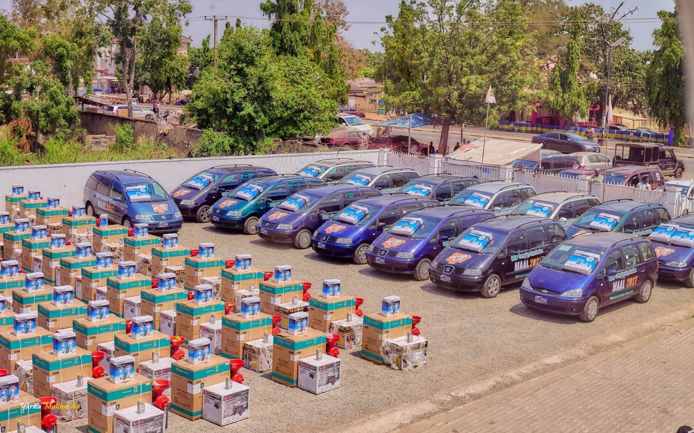

Nasarawa SDP governorship candidate gifts 163 women leaders cars, cash, equipment

Muhammad Adamu, the Social Democratic Party’s governorship candidate in Nasarawa State, has distributed vehicles, cash and household equipment to women leaders across the state. The programme, held on 31 October, covered leaders from all 13 local government areas and 147 electoral wards, according to his campaign. Adamu is seeking the governorship in the 2027 general election.
The campaign said the beneficiaries received cars, refrigerators, grinding machines, generators, solar-powered fans and cash. Adamu also confirmed the exercise in a post on his official Facebook page, describing it as an effort to support women’s economic empowerment and strengthen grassroots participation.
Each of the 13 local government women leaders received a Sharon car, a solar-powered fan and N200,000, the campaign said. The three zonal women leaders also received cars and solar-powered fans. The statement gave conflicting figures for the cash allocated to those leaders, so their individual amounts were not clear. The 147 ward women leaders received a refrigerator, grinding machine, generator, solar-powered table fan and N100,000 each. The campaign said the total cash distributed to ward leaders was N14.7 million.
The campaign presented the initiative as part of Adamu’s efforts to increase women’s political participation and economic independence. His recent community activities have also included commissioning two solar-powered boreholes in Keffi, at Angwan Lambu Phase II and near the High Court. Adamu said the projects were sponsored by his wife, Rukayya Adamu, to help meet water needs among Nasarawa State University students and residents of surrounding communities.
Source: Premium Times